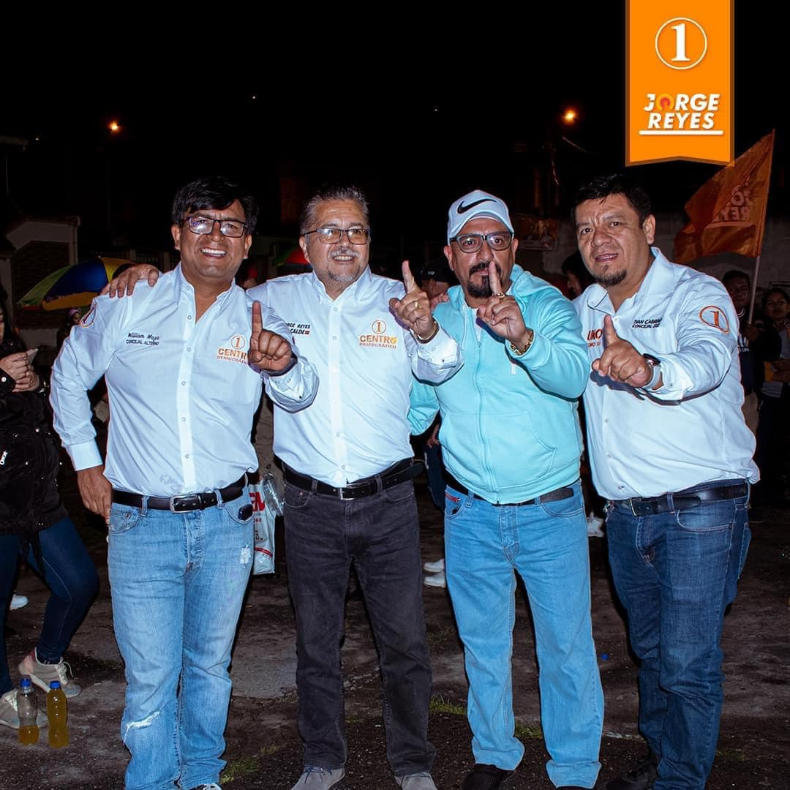
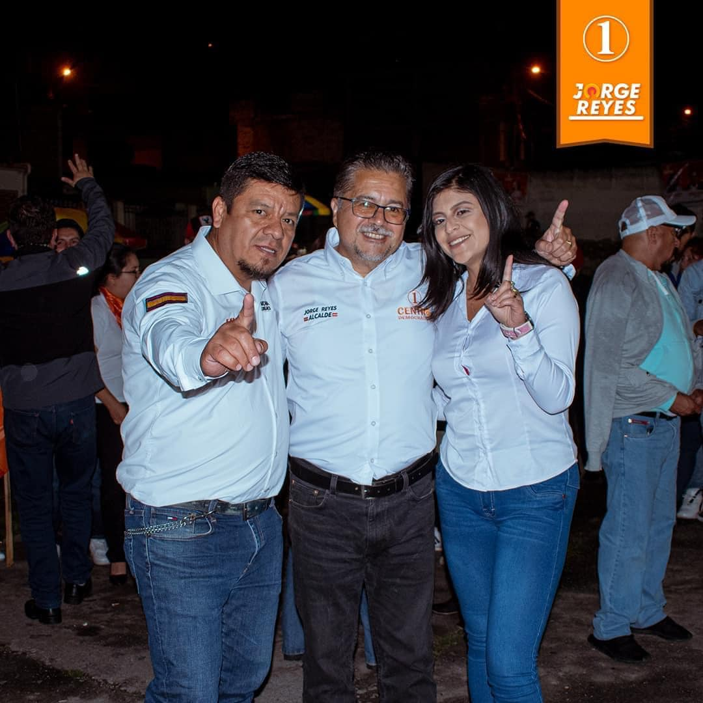
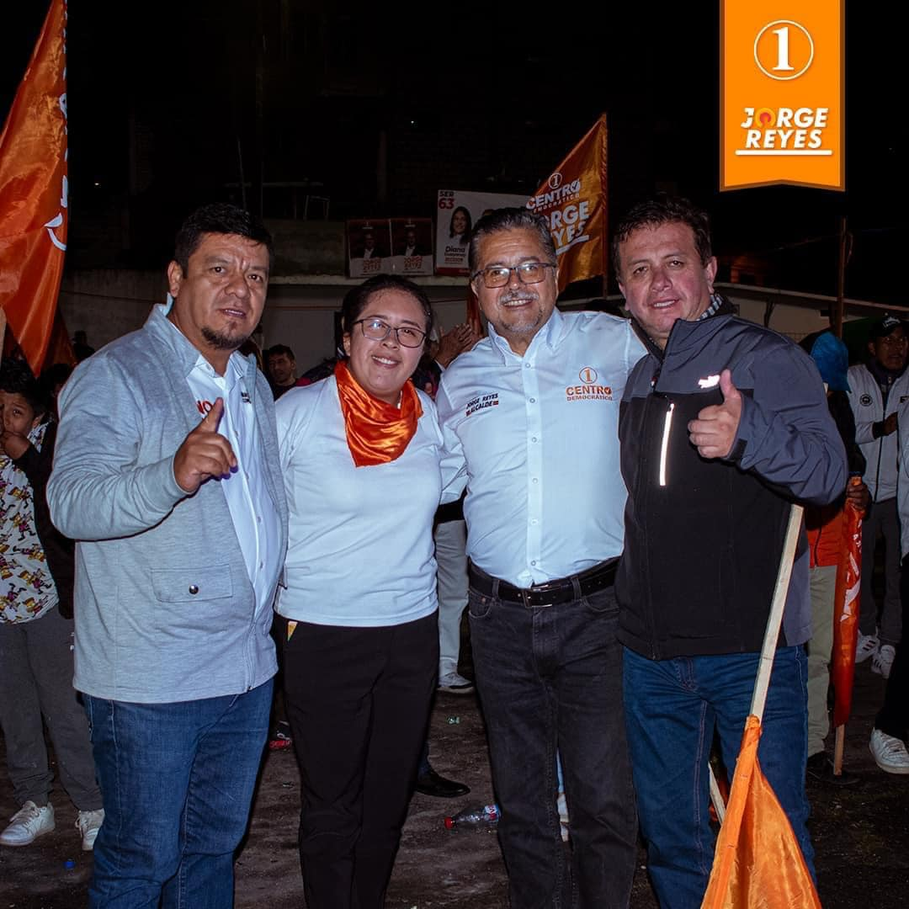

Principios y Valores
Los pilares que guían mi trabajo y compromiso con Loja
Nuestra Filosofía
Creo firmemente que el liderazgo efectivo se construye sobre la base de principios sólidos y valores inquebrantables. Estos son los pilares que guían mi trabajo y mi compromiso con la comunidad lojana.
Compromiso Social
Trabajo incansablemente por el bienestar de todos los lojanos, priorizando las necesidades de los más vulnerables y promoviendo la igualdad de oportunidades.
Transparencia
Creo en la rendición de cuentas y en la gestión transparente de los recursos públicos, fomentando la participación ciudadana en la toma de decisiones.
Excelencia
Promuevo la excelencia en el servicio público, basada en la capacitación continua y la mejora constante de los procesos administrativos.
Solidaridad
Fomento la cooperación y el trabajo en equipo, reconociendo que los grandes logros se consiguen mediante el esfuerzo colectivo.
Sostenibilidad
Promuevo un desarrollo equilibrado que respete el medio ambiente y garantice un futuro próspero para las próximas generaciones.
Justicia Social
Trabajo por la equidad y la inclusión, combatiendo las desigualdades y promoviendo el acceso a servicios básicos de calidad para todos.
Nuestra Visión
Aspiro a una Loja próspera, justa y sostenible, donde cada ciudadano tenga la oportunidad de desarrollar su máximo potencial en un ambiente de paz, igualdad y respeto mutuo.
Nuestra Misión
Trabajar incansablemente para mejorar la calidad de vida de los lojanos a través de una gestión honesta, eficiente y cercana a la gente, promoviendo el desarrollo integral de nuestro cantón.
Nuestro Equipo
Un equipo comprometido con el desarrollo de Loja, trabajando juntos para hacer realidad nuestra visión compartida.

Dr. Jorge Reyes Jaramillo
Líder y Candidato
Médico especializado en salud pública con más de 25 años de experiencia en servicio comunitario.

María Fernández
Directora de Campaña
Experta en comunicación política y estrategias de campaña con amplia trayectoria en el ámbito público.

Carlos Andrade
Coordinador de Voluntarios
Líder comunitario comprometido con la participación ciudadana y el trabajo en equipo.
Únete a Nuestro Equipo
Si compartes nuestros valores y deseas trabajar por un mejor futuro para Loja, te invitamos a ser parte de este proyecto.
Contáctanos